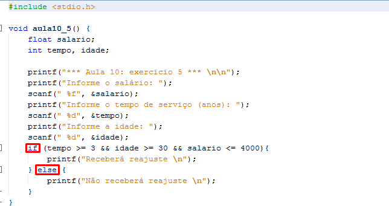
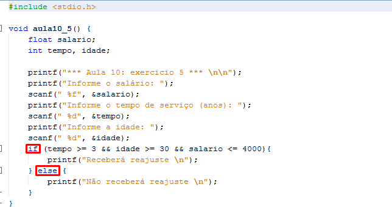

Olá meu nome Ana Beatriz, 19 anos e residente de Fernandópolis.
Técnica Contabil formada pela Etec Fernandópolis e atualmente universitária em Sistemas
para Internet na Fatec Jales.
Portifório
Cartão de Visita

 Clique aqui!
Clique aqui!
Artigo
Redes Sociais no âmbito empresarial
Portifório
Cartão de Visita
Artigo
Redes Sociais no âmbito empresarial
As redes sociais atualmente passam de meios de entretenimento e comunicação pessoal, alcança credibilidade
no âmbito empresarial substancialmente, aproximando cliente e organização, convertendo ideologias que vão além de divulgação,
marketing e propagandas, influenciando modificação no mercado, evoluindo estrategicamente.
Em uma pesquisa feita com alguns colegas através de um simples formulário do google,
pude avaliar que aproximadamente 95% das pessoas pesquisam e seguem empresas nas redes sociais.
E você? Na sua perspectiva ter redes sociais âmbito empresarial é viável? Com a ferramenta de enquete do aplicativo “Instagram”,
interagi com meus seguidores sobre o assunto, cerca de 110 pessoas participaram espontaneamente do breve “quiz”
e 100% das mesmas anuem que como cliente consideram que negócios e redes sociais formam um elo par.
Ao bater um papo com os empresários Leonardo e Fernando da PyxSoftware (empresa de desenvolvimento de software e gestão de mídias sociais,
localizada em Fernandópolis), extrai que as empresas estão atentas a essa evolução de mercado,
e a cada dia estão à procura de estratégias, além de estarem se adequando e evoluindo quanto ao assunto, e enxergam grandes benefícios.
Porém tratando se de negócios, é necessário precaução, analises para realizar o manuseio corretos das ferramentas sociais.
Se utilizadas corretamente e constantemente planejada causam referencias positivas, credibilidade tecnologia e identidade social,
ressaltando que tais ações e informações influenciam até mesmo nas tomadas de decisões de uma gestão.
Diante disso, planejamento correto é benéfico, abrindo caminhos que vão desde comunicação, divulgação, identidade empresarial na web,
até mesmo alcance publicitários com custo baixo. Estar atento as mudanças e interação cliente e empresa e primordial.
Estrutura de programinhas C
Laços de Repetição
 
